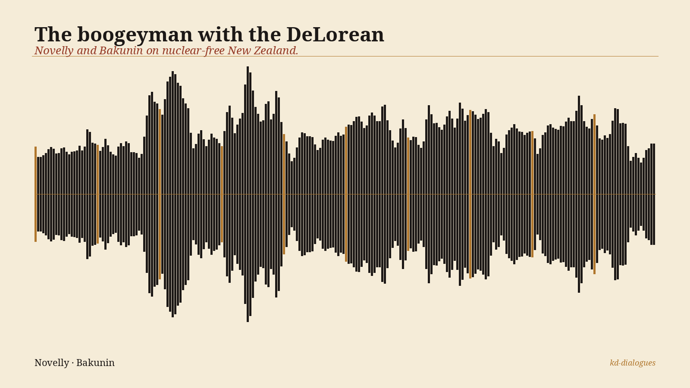

<!-- kd-dialogues audio embed :: nuclear-boogeyman -->
<!-- Replace the src below with a public URL to the mp3, e.g. a GitHub raw URL. -->
<figure style="max-width:640px;margin:1.4rem auto;font-family:'Noto Serif',Georgia,serif;color:#1c1816">
  
  <audio controls preload="metadata" style="width:100%;margin-top:8px">
    <source src="https://raw.githubusercontent.com/robertmccallnz/kd-dialogues/main/episodes/003-nuclear-boogeyman/nuclear-boogeyman.mp3" type="audio/mpeg">
    Your browser cannot play this audio. <a href="https://raw.githubusercontent.com/robertmccallnz/kd-dialogues/main/episodes/003-nuclear-boogeyman/nuclear-boogeyman.mp3">Download the mp3</a>.
  </audio>
  <figcaption style="font-style:italic;text-align:center;color:#4a4238;margin-top:6px">
    The boogeyman with the DeLorean — Novelly and Bakunin on nuclear-free New Zealand.
  </figcaption>
  <details style="margin-top:10px;font-size:0.9rem"><summary style="cursor:pointer;color:#963c28">Sources &amp; further reading</summary><ul style="margin:6px 0 0 1.2rem;padding:0"><li><a href="https://www.rnz.co.nz/news/politics/660035/new-us-ambassador-would-like-chance-to-work-on-new-zealand-s-nuclear-policy">RNZ — New US ambassador would like chance to work on NZ's nuclear policy</a> — <span style="color:#4a4238">Lillian Hanly, 3 July 2026 — all Novelly quotes verbatim</span></li><li><a href="https://thespinoff.co.nz/politics/27-05-2026/us-senate-confirms-donald-trumps-pick-for-ambassador-to-nz-billionaire-jared-novelly">The Spinoff — US Senate confirms Trump's pick for ambassador to NZ</a> — <span style="color:#4a4238">background on Novelly's Apex Oil family and Republican donor history</span></li><li><a href="https://projects.propublica.org/trump-team-financial-disclosures/appointees/novelly-jared/">ProPublica — Trump team financial disclosures, Novelly Jared</a></li><li><a href="https://www.stlmag.com/business/jared-novelly-basketball-australia/">St Louis Magazine — Novelly's push to unseat Kestelman</a> — <span style="color:#4a4238">March 2025 corporate raid on Illawarra Hawks / NBL</span></li><li><a href="https://law.justia.com/cases/federal/appellate-courts/F2/960/728/">Justia — Apex Oil Chapter 11 appeals (960 F.2d 728)</a> — <span style="color:#4a4238">1987 bankruptcy; self-dealing allegations unproven; creditors paid 64–86¢/$</span></li><li><a href="https://www.legislation.govt.nz/act/public/1987/0086/latest/DLM115116.html">Nuclear Free New Zealand Act 1987</a> — <span style="color:#4a4238">the law Novelly wants "the chance to work on"</span></li><li>Bakunin, Statism and Anarchy (1873) — <span style="color:#4a4238">chapter on the alliance of church, state, and capital</span></li><li><a href="https://kiwidialectic.substack.com">The Kiwi Dialectic</a> — <span style="color:#4a4238">full course notes and further reading</span></li></ul></details>
</figure>
